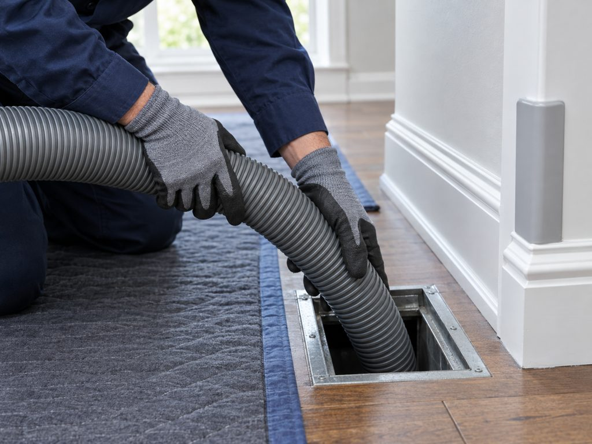

Air duct cleaning · Madison, Wisconsin
Madison air duct cleaning, done by the person who answers the phone.
NADCA-certified, licensed and insured. Nick Bellino inspects first, tells you honestly whether your ducts need cleaning, then cleans the whole system under HEPA-filtered vacuum. Serving Madison and the surrounding Dane and Columbia County communities.
- NADCA member since 2022
- ASCS-certified owner
- BBB A+ rated
- Free inspection

Services
Three things, done thoroughly.
Air duct cleaning
Whole-system mechanical cleaning under 5,000 CFM negative pressure. Every vent, register, grill and diffuser hand-washed. Odor elimination and bio-growth treatment available.
Quoted per system →Dryer vent cleaning
Lint removal from the dryer to the exterior hood. Shorter dry times, lower fire risk, and a look at the transition duct behind the machine.
$175 flat →Indoor air quality testing
Pollutant assessment, mycotoxin testing, humidity and environmental testing. Know what is in your air before you spend money cleaning it.
Test first →
How the work is done
Under vacuum, by hand, with your floors covered.
- Free inspection. Nick looks inside the system and shows you what he finds. If it doesn't need cleaning, he says so.
- Protect the home. Shoe coverings, floor coverings and corner guards on drywall and trim.
- Negative pressure. A portable vacuum with two 2,500 CFM motors pulls 5,000 CFM through the system while HEPA-filtering your indoor air to 0.3 µm.
- Every opening. Each vent, register, grill and diffuser is removed and washed with an environmentally safe degreaser.
- Brush and air-wash. For odor elimination, openings are blocked, the system is brushed, then air-washed with 180 PSI of fresh outside air.
Who shows up
Nick Bellino, owner. NADCA-certified, and he wrote the book on it. Five, actually.
Nick holds NADCA's Air Systems Cleaning Specialist (ASCS) certification and an Indoor Air Quality Technician certification, and has written five books on mold, mycotoxins and indoor air quality. He answers the phone, performs the inspection and does the cleaning himself.
Service area
Madison and the communities around it.
What customers say
5.0 stars, everywhere we're listed.
“Very professional and courteous. Nick, Rocko, and Kim from Poynette came out to our house to clean our vents. They were very knowledgeable and took the time to explain everything to us. It was very apparent that they cared about the quality of their work, as well as the health and well-being of my family.”
Homeowner guides
Read before you book anyone.
What air duct cleaning costs in Madison
Realistic ranges, what drives the price, and the $99 “whole house special” trap.
Read →7 signs your air ducts need cleaning
And three that are commonly misread. Based on EPA and NADCA guidance.
Read →Dryer vent fire safety
Why lint is the leading factor in dryer fires and the five-minute check.
Read →Questions
Straight answers.
Do my air ducts actually need cleaning?
Not always, and we will tell you if they don't. The EPA says duct cleaning is reasonable when there is visible mold growth inside ducts or on HVAC components, when ducts are infested with vermin, or when they are clogged with excessive dust and debris that is released into the home. Every job starts with a free inspection so you can see what is in the system before deciding.
How is Ducts On Call different from other duct cleaners in Madison?
Nick Bellino, the owner, is a NADCA-certified Air Systems Cleaning Specialist (ASCS) and the author of five books on mold, mycotoxins and indoor air quality. He answers the phone, performs the inspection and does the work himself. There is no call center and no sales team.
What does the cleaning process involve?
The system is placed under negative pressure with a portable HEPA-filtered vacuum drawing 5,000 CFM (two 2,500 CFM motors), so dislodged debris is pulled out of the home rather than into it. Each vent, register, grill and diffuser is removed and washed by hand with an environmentally safe degreaser. For odor elimination the openings are blocked to maximize suction, the system is brushed, then air-washed with 180 PSI of fresh outside air.
How often should ducts be cleaned?
The EPA recommends cleaning as needed rather than on a fixed schedule. NADCA's ACR standard suggests inspecting air handling units yearly and ductwork about every two years, more often with pets, smokers, recent renovation, water damage or occupants with respiratory sensitivities.
How much does it cost?
Dryer vent cleaning is a flat $175. Air duct cleaning is quoted per system after the free inspection, so the price reflects your actual home: number of vents, furnace and air conditioner, and what the inspection finds. No surprises on the day.